<div class="initial-content">
  <div id="main" role="main">

  <article class="page has-sidebar" itemscope itemtype="https://schema.org/CreativeWork">
    <meta itemprop="headline" content="Working in Go applications with Oracle Database and Oracle Cloud Autonomous Database">
    
    <meta itemprop="datePublished" content="2022-05-26T11:00:00+00:00">
    


    <header>
      <h1 id="page-title" class="page__title" itemprop="headline">Working in Go applications with Oracle Database and Oracle Cloud Autonomous Database
</h1>
      


    </header>

    <section class="page__content" itemprop="text">
      

        <picture class="alignright">
                <source srcset="assets/way-to-go-on-oci-article-4-endtoend-apigw-vm-object-atp.png 1x" />
                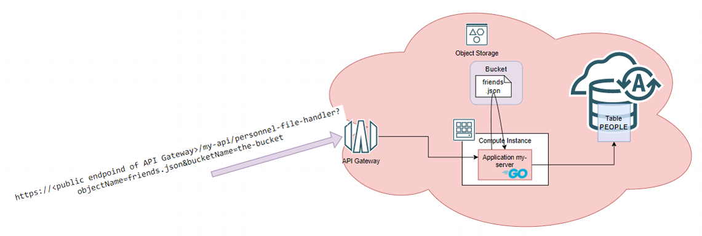
            </picture>

<p>This is the fourth part of a five part series about Go and Oracle Cloud Infrastructure (OCI). This series discusses how Go applications can be created and run on Oracle Cloud Infrastructure in Compute Instances (VMs), containerized on Kubernetes, or as serverless Functions. The articles show how to automate the build and deployment of these Go applications using OCI DevOps. An important topic is how to use OCI services from Go applications – both those running on OCI as well as Go code running elsewhere. OCI services discussed include Object Storage, Streaming, Key Vault, and Autonomous Database.</p>

<p>In order to follow along with these articles, readers should have at least basic knowledge of how to create Go applications. It is assumed that readers have access to their own Go development environment. Some of the examples and screenshots will specifically mention VS Code as development tool. However, other editors and IDEs can be used as well. The Go code presented in these articles demonstrates a number of mechanisms in their simplest form for maximum clarity and with the least dependencies. Readers should not expect meaningful functionality or production-ready code.</p>

<p>This series describes how to get Going on OCI. To try out the examples, readers will need to have access to an OCI tenancy with permissions to create the OCI resources discussed in these articles. Most of the resources used are available in the <em>Aways Free Tier</em> (Compute Instance, VCN, Autonomous Database, Object Storage, Logging, Resource Manager) or have a free allotment tier for limited monthly usage (Functions, API Gateway, Streaming, Vault, DevOps).</p>

<h2 id="introduction">Introduction</h2>

<p>The first part of these series describes provisioning of a Compute Instance based on the Oracle Linux Cloud Developer image, opening it up for inbound and outbound network activity, and creating and running a Go application that serves HTTP requests and connecting logging produced by the application to OCI Logging. Part two deals with software engineering, automation of build and deployment of the application with the OCI DevOps service. This service is used for storing the Go source code, building the application executable and storing it as deployable artifact, deploying that artifact to a Compute Instance. The article also shows how to expose an HTTP endpoint for the application through an OCI API Gateway. Part three shows how to create serverless functions in Go and deploy them on OCI. The Go SDK for OCI is introduced – first for local, standalone Go applications, and subsequently for use from functions, leveraging resource principal authentication. This SDK is used to interact with the OCI Object Storage service for creating buckets and writing and reading files.</p>

<p>Part four, which you are reading right now, discusses the interaction between your Go application and an Oracle Database. This can be a local or on-premises database, a database running on some cloud vendor’s IaaS instances, or an OCI Autonomous Database. Using the standard Go database/sql package with a driver for Oracle Database and feeding the required configuration details to the driver, it turns out that leveraging any Oracle Database from Go is quite straightforward. The Go application <code class="language-plaintext highlighter-rouge">myserver</code> discussed in part two is extended to interact with both an Autonomous Database instance on OCI and the OCI Object Storage service. The application uses the <em>Go SDK for OCI</em> to read files (and subsequently remove them) from a bucket on Object Storage and create database records in the Autonomous Database based on their contents.</p>

<h2 id="local-go-application-talking-to-local-database">Local Go Application talking to Local Database</h2>

<p>The Go language has support for SQL interactions with relational databases built into it. The standard package <em>database/sql</em>  includes types and functions for connecting to databases, executing transactions, canceling an operation in progress, and more. This same package can be used for working in the same way with some NoSQL databases such as MongoDB and Couchbase.</p>

<p>A Go application that interacts with a database through this package does not need to have technical implementation details for a specific database product. These details are typically implemented in a driver for that database. The application imports the required driver for the database to connect to, and tells the standard package <em>database/sql</em> which driver to use and what the connection details are for the database. Most of the interaction with the database is the same, regardless the specific database technology; records are created, updated and deleted through SQL DML statements, and records are retrieved through SQL queries. The overall process is the same across databases, but the exact SQL dialect can vary. This is probably the only real obstacle for easily moving Go applications between different database products.</p>

<p>The code discussed in this section is located in directory <code class="language-plaintext highlighter-rouge">/applications/go-orcl-db</code> in <a href="https://github.com/lucasjellema/go-on-oci-article-sources">the code repository that accompanies this article series</a>.</p>

<h3 id="go-application-does-sql--ddl-dml-and-query">Go Application does SQL – DDL, DML and Query</h3>

<p>The simplest thing to do with an Oracle Database from a Go application is to query a single row. The code required for this looks something like this:</p>

<div class="language-go highlighter-rouge"><div class="highlight"><pre class="highlight"><code><span class="k">package</span> <span class="n">main</span>

<span class="k">import</span> <span class="p">(</span>
	<span class="s">"database/sql"</span>
	<span class="s">"fmt"</span>
<span class="p">)</span>

<span class="k">func</span> <span class="n">sqlOperations</span><span class="p">(</span><span class="n">db</span> <span class="o">*</span><span class="n">sql</span><span class="o">.</span><span class="n">DB</span><span class="p">)</span> <span class="p">{</span>
	<span class="k">var</span> <span class="n">queryResultColumnOne</span> <span class="kt">string</span>
	<span class="n">row</span> <span class="o">:=</span> <span class="n">db</span><span class="o">.</span><span class="n">QueryRow</span><span class="p">(</span><span class="s">"SELECT to_char(systimestamp,'HH24:MI:SS') FROM dual"</span><span class="p">)</span>
	<span class="n">err</span> <span class="o">:=</span> <span class="n">row</span><span class="o">.</span><span class="n">Scan</span><span class="p">(</span><span class="o">&amp;</span><span class="n">queryResultColumnOne</span><span class="p">)</span>
	<span class="k">if</span> <span class="n">err</span> <span class="o">!=</span> <span class="no">nil</span> <span class="p">{</span>
		<span class="nb">panic</span><span class="p">(</span><span class="n">fmt</span><span class="o">.</span><span class="n">Errorf</span><span class="p">(</span><span class="s">"error scanning query result from database into target variable: %w"</span><span class="p">,</span> <span class="n">err</span><span class="p">))</span>
	<span class="p">}</span>
	<span class="n">fmt</span><span class="o">.</span><span class="n">Println</span><span class="p">(</span><span class="s">"The time in the database "</span><span class="p">,</span> <span class="n">queryResultColumnOne</span><span class="p">)</span>
<span class="p">}</span>
</code></pre></div></div>

<p>The import statement makes the <em>database/sql</em> package available. Using the handle to <code class="language-plaintext highlighter-rouge">sql.DB</code>, a SQL query can easily be executed (<code class="language-plaintext highlighter-rouge">QueryRow</code>) and the result can be scanned into local variables. Quite simple and straightforward and database brand independent, except for the specific SQL statement, which in this case uses the Oracle specific <code class="language-plaintext highlighter-rouge">systimestamp</code>.</p>

<p>For now, let’s not dwell on where the <code class="language-plaintext highlighter-rouge">db</code> parameter comes from. In a little while we’ll talk about database drivers, and that’s where all will be revealed.</p>

<p>A slightly more interesting function that creates a table, inserts a record, queries the record, creates to more records then queries all rows and finally drops the table is shown here. You will find this code in file <code class="language-plaintext highlighter-rouge">oracle-database-client-app.go</code> in the code repository.</p>

<div class="language-go highlighter-rouge"><div class="highlight"><pre class="highlight"><code><span class="k">package</span> <span class="n">main</span>

<span class="k">import</span> <span class="p">(</span>
	<span class="s">"database/sql"</span>
	<span class="s">"fmt"</span>
<span class="p">)</span>

<span class="k">const</span> <span class="n">createTableStatement</span> <span class="o">=</span> <span class="s">"CREATE TABLE TEMP_TABLE ( NAME VARCHAR2(100), CREATION_TIME TIMESTAMP DEFAULT SYSTIMESTAMP, VALUE  NUMBER(5))"</span>
<span class="k">const</span> <span class="n">dropTableStatement</span> <span class="o">=</span> <span class="s">"DROP TABLE TEMP_TABLE PURGE"</span>
<span class="k">const</span> <span class="n">insertStatement</span> <span class="o">=</span> <span class="s">"INSERT INTO TEMP_TABLE ( NAME , VALUE) VALUES (:name, :value)"</span>
<span class="k">const</span> <span class="n">queryStatement</span> <span class="o">=</span> <span class="s">"SELECT name, creation_time, value FROM TEMP_TABLE

func sqlOperations(db *sql.DB) {
	_, err := db.Exec(createTableStatement)
	handleError("</span><span class="n">create</span> <span class="n">table</span><span class="s">", err)
	defer db.Exec(dropTableStatement) // make sure the table is removed when all is said and done
	stmt, err := db.Prepare(insertStatement)
	handleError("</span><span class="n">prepare</span> <span class="n">insert</span> <span class="n">statement</span><span class="s">", err)
	sqlresult, err := stmt.Exec("</span><span class="n">John</span><span class="s">", 42)
	handleError("</span><span class="n">execute</span> <span class="n">insert</span> <span class="n">statement</span><span class="s">", err)
	rowCount, _ := sqlresult.RowsAffected()
	fmt.Println("</span><span class="n">Inserted</span> <span class="n">number</span> <span class="n">of</span> <span class="n">rows</span> <span class="o">=</span> <span class="s">", rowCount)

	var queryResultName string
	var queryResultTimestamp time.Time
	var queryResultValue int32
	row := db.QueryRow(queryStatement)
	err = row.Scan(&amp;queryResultName, &amp;queryResultTimestamp, &amp;queryResultValue)
	handleError("</span><span class="n">query</span> <span class="n">single</span> <span class="n">row</span><span class="s">", err)
	if err != nil {
		panic(fmt.Errorf("</span><span class="kt">error</span> <span class="n">scanning</span> <span class="n">db</span><span class="o">:</span> <span class="o">%</span><span class="n">w</span><span class="s">", err))
	}
	fmt.Println(fmt.Sprintf("</span><span class="n">The</span> <span class="n">name</span><span class="o">:</span> <span class="o">%</span><span class="n">s</span><span class="p">,</span> <span class="n">time</span><span class="o">:</span> <span class="o">%</span><span class="n">s</span><span class="p">,</span> <span class="n">value</span><span class="o">:%</span><span class="n">d</span> <span class="s">", queryResultName, queryResultTimestamp, queryResultValue))
	_, err = stmt.Exec("</span><span class="n">Jane</span><span class="s">", 69)
	handleError("</span><span class="n">execute</span> <span class="n">insert</span> <span class="n">statement</span><span class="s">", err)
	_, err = stmt.Exec("</span><span class="n">Malcolm</span><span class="s">", 13)
	handleError("</span><span class="n">execute</span> <span class="n">insert</span> <span class="n">statement</span><span class="s">", err)

	// fetching multiple rows
	theRows, err := db.Query(queryStatement)
	handleError("</span><span class="n">Query</span> <span class="k">for</span> <span class="n">multiple</span> <span class="n">rows</span><span class="s">", err)
	defer theRows.Close()
	var (
		name  string
		value int32
		ts    time.Time
	)
	for theRows.Next() {
		err := theRows.Scan(&amp;name, &amp;ts, &amp;value)
		handleError("</span><span class="n">next</span> <span class="n">row</span> <span class="n">in</span> <span class="n">multiple</span> <span class="n">rows</span><span class="s">", err)
		fmt.Println(fmt.Sprintf("</span><span class="n">The</span> <span class="n">name</span><span class="o">:</span> <span class="o">%</span><span class="n">s</span> <span class="n">and</span> <span class="n">value</span><span class="o">:%</span><span class="n">d</span> <span class="n">created</span> <span class="n">at</span> <span class="n">time</span><span class="o">:</span> <span class="o">%</span><span class="n">s</span> <span class="s">", name, value, ts))
	}
	err = theRows.Err()
	handleError("</span><span class="n">next</span> <span class="n">row</span> <span class="n">in</span> <span class="n">multiple</span> <span class="n">rows</span><span class="s">", err)
}

func handleError(msg string, err error) {
	if err != nil {
		fmt.Println(msg, err)
		os.Exit(1)
	}
}
</span></code></pre></div></div>

<p>This code is quite functional in nature. Apart from the SQL statements, there are no database-specific implementation details. Half of the code seems to be error handling. It should be not too hard to understand how this code manipulates the database, except for the fact that there is no database to work with yet, and (therefore) also no driver to make the connection and handle the communication. Let’s remedy this by first running a local database and then adding a driver the database to the Go application.</p>

<h3 id="run-local-oracle-database">Run local Oracle Database</h3>

<p>There are many different ways to get a local Oracle Database up and running. The easiest way I have found uses a Docker container image that allows me to run a local database with one very simple and straightforward statement:</p>

<div class="language-console highlighter-rouge"><div class="highlight"><pre class="highlight"><code><span class="go">docker run -d -p 1521:1521 -e ORACLE_PASSWORD=TheSuperSecret1509! gvenzl/oracle-xe
</span></code></pre></div></div>

<p>This runs an <em>Oracle Database XE 21c</em> instance (at least, that is what it does at the time of writing, when 21c is the latest available container image) and sets the passwords for <code class="language-plaintext highlighter-rouge">SYS</code> and <code class="language-plaintext highlighter-rouge">SYSTEM</code> to the indicated value. The database is available on port 1521 on <em>localhost</em>.</p>

<p>Gerald Venzl of Oracle maintains a series of (Docker) Container Images that run a slim version of Oracle Database, the XE edition, which is free to use (up to 20GB of data and using a maximum of 2 CPU threads &amp; 2 GB RAM). He describes these images and how to use them in an article titled <a href="https://geraldonit.com/2021/08/15/oracle-xe-docker-images/">Introducing gvenzl/oracle-xe: Oracle Database XE Docker images</a>.</p>

<p>Follow these steps to verify that the local Oracle Database is up and running:</p>

<ol>
  <li>
    <p>Find the container identifier with <code class="language-plaintext highlighter-rouge">docker ps | grep gvenzl</code>. Then open a Bash shell in the container:</p>

    <div class="language-plaintext highlighter-rouge"><div class="highlight"><pre class="highlight"><code> ```console
 docker exec -it &lt;container identifier&gt; /bin/bash
 ```
</code></pre></div>    </div>
  </li>
  <li>
    <p>Now, connect to the database and run SQL statements:</p>

    <div class="language-plaintext highlighter-rouge"><div class="highlight"><pre class="highlight"><code> ```console
 sqlplus system/TheSuperSecret1509! as sysdba
 ```
</code></pre></div>    </div>
  </li>
  <li>
    <p>Create a user (schema) to work with in the following sections, for example an innocent <code class="language-plaintext highlighter-rouge">demo</code> user:</p>

    <div class="language-plaintext highlighter-rouge"><div class="highlight"><pre class="highlight"><code> ```sql
 create user demo identified by demo default tablespace users temporary tablespace temp 
 /
 grant connect, resource to demo 
 /
 ```
</code></pre></div>    </div>
  </li>
</ol>

<p>Now, it’s time to connect to this database from the Go application.</p>

<blockquote class="notice">
  <p>Note: You may be interested in installing the <a href="https://www.oracle.com/database/technologies/appdev/dotnet/odtvscodequickstart.html">Oracle VS Code extension</a> that allows making connections to Oracle Databases – local and remote – browse their contents and interact with them similar to SQL Developer and other desktop tools.</p>
</blockquote>

<h3 id="add-a-driver-for-oracle-database">Add a Driver for Oracle Database</h3>

<p>There is no official Go driver for Oracle Database, at least not one published or endorsed by Oracle. The <a href="https://github.com/golang/go/wiki/SQLDrivers">unofficial list of Go database drivers</a> has four entries for Oracle Database. Three require installation of the Oracle Client libraries, and one does not. Let’s first work with that last one, called <em>go-ora</em>, a pure driver that by itself handles all communication with the database. Details about <em>go-ora</em> are available from <a href="https://github.com/sijms/go-ora">the go-ora homepage on GitHub</a>. We will subsequently also look at <em>godror</em>, a driver which requires the libraries to be installed and the one that seems most prominent among the Oracle Database drivers for Go.</p>

<p>The <em>go-ora</em> driver can be added to the Go application with:</p>

<div class="language-console highlighter-rouge"><div class="highlight"><pre class="highlight"><code><span class="go">go get github.com/sijms/go-ora/v2
</span></code></pre></div></div>

<p>This downloads the package and adds a <em>require</em> entry to the <code class="language-plaintext highlighter-rouge">go.mod</code> file. For me that looks like this:</p>

<div class="language-go highlighter-rouge"><div class="highlight"><pre class="highlight"><code><span class="n">module</span> <span class="n">oracle</span><span class="o">-</span><span class="n">database</span><span class="o">-</span><span class="n">client</span>

<span class="k">go</span> <span class="m">1.16</span>

<span class="n">require</span> <span class="p">(</span>
	<span class="n">github</span><span class="o">.</span><span class="n">com</span><span class="o">/</span><span class="n">sijms</span><span class="o">/</span><span class="k">go</span><span class="o">-</span><span class="n">ora</span><span class="o">/</span><span class="n">v2</span> <span class="n">v2</span><span class="m">.4.16</span> <span class="c">// indirect</span>
<span class="p">)</span>
</code></pre></div></div>

<p>In a new file called <code class="language-plaintext highlighter-rouge">pure-oracle-database-client.go</code> (although Go does not really care about the name) in the same directory as file <code class="language-plaintext highlighter-rouge">oracle-database-client-app.go</code>, the following code handles the interaction with the local Oracle Database through <em>go-ora</em>. The driver package is imported and the call to <code class="language-plaintext highlighter-rouge">sql.Open</code>, which references <code class="language-plaintext highlighter-rouge">oracle</code> implicitly, selects <em>go-ora</em> as the driver of choice.</p>

<p>Parameter <em>dbParams</em> consists of a map of configuration settings (including the username and password), database host and port, and service name to use for making a connection. The connection string is composed using these elements and used in the call to <code class="language-plaintext highlighter-rouge">sql.Open</code>. The subsequent call to <code class="language-plaintext highlighter-rouge">db.Ping</code> is the first attempt to really establish communications with the database. When this call is successful, we are ready for some real database actions.</p>

<div class="language-go highlighter-rouge"><div class="highlight"><pre class="highlight"><code><span class="k">package</span> <span class="n">main</span>

<span class="k">import</span> <span class="p">(</span>
	<span class="s">"database/sql"</span>
	<span class="s">"fmt"</span>
	<span class="s">"net/url"</span>
	<span class="n">_</span> <span class="s">"github.com/sijms/go-ora/v2"</span>
<span class="p">)</span>

<span class="k">func</span> <span class="n">GetSqlDBWithPureDriver</span><span class="p">(</span><span class="n">dbParams</span> <span class="k">map</span><span class="p">[</span><span class="kt">string</span><span class="p">]</span><span class="kt">string</span><span class="p">)</span> <span class="o">*</span><span class="n">sql</span><span class="o">.</span><span class="n">DB</span> <span class="p">{</span>
	<span class="n">connectionString</span> <span class="o">:=</span> <span class="s">"oracle://"</span> <span class="o">+</span> <span class="n">dbParams</span><span class="p">[</span><span class="s">"username"</span><span class="p">]</span> <span class="o">+</span> <span class="s">":"</span> <span class="o">+</span> <span class="n">dbParams</span><span class="p">[</span><span class="s">"password"</span><span class="p">]</span> <span class="o">+</span> <span class="s">"@"</span> <span class="o">+</span> <span class="n">dbParams</span><span class="p">[</span><span class="s">"server"</span><span class="p">]</span> <span class="o">+</span> <span class="s">":"</span> <span class="o">+</span> <span class="n">dbParams</span><span class="p">[</span><span class="s">"port"</span><span class="p">]</span> <span class="o">+</span> <span class="s">"/"</span> <span class="o">+</span> <span class="n">dbParams</span><span class="p">[</span><span class="s">"service"</span><span class="p">]</span>
	<span class="n">db</span><span class="p">,</span> <span class="n">err</span> <span class="o">:=</span> <span class="n">sql</span><span class="o">.</span><span class="n">Open</span><span class="p">(</span><span class="s">"oracle"</span><span class="p">,</span> <span class="n">connectionString</span><span class="p">)</span>
	<span class="k">if</span> <span class="n">err</span> <span class="o">!=</span> <span class="no">nil</span> <span class="p">{</span>
		<span class="nb">panic</span><span class="p">(</span><span class="n">fmt</span><span class="o">.</span><span class="n">Errorf</span><span class="p">(</span><span class="s">"error in sql.Open: %w"</span><span class="p">,</span> <span class="n">err</span><span class="p">))</span>
	<span class="p">}</span>
	<span class="n">err</span> <span class="o">=</span> <span class="n">db</span><span class="o">.</span><span class="n">Ping</span><span class="p">()</span>
	<span class="k">if</span> <span class="n">err</span> <span class="o">!=</span> <span class="no">nil</span> <span class="p">{</span>
		<span class="nb">panic</span><span class="p">(</span><span class="n">fmt</span><span class="o">.</span><span class="n">Errorf</span><span class="p">(</span><span class="s">"error pinging db: %w"</span><span class="p">,</span> <span class="n">err</span><span class="p">))</span>
	<span class="p">}</span>
	<span class="k">return</span> <span class="n">db</span>
<span class="p">}</span>
</code></pre></div></div>

<h3 id="connecting-and-running">Connecting and Running</h3>

<p>The database is running, and we have a function that works with a pure Oracle Database driver. Now, let’s return to <code class="language-plaintext highlighter-rouge">oracle-database-client-app.go</code> and tie it together.</p>

<p>Add function <code class="language-plaintext highlighter-rouge">main</code> in this file. It calls <code class="language-plaintext highlighter-rouge">GetSqlDBWithPureDriver</code> to create a <code class="language-plaintext highlighter-rouge">sql.DB</code> instance using the database connection details defined in map <em>localDB</em>. Modify these values to align with your database configuration. The function call sets the <code class="language-plaintext highlighter-rouge">db</code> variable with <code class="language-plaintext highlighter-rouge">*sql.DB</code>, which can be used for further SQL operations.</p>

<p>When all database interactions are complete, the connection should be closed to release the resources. To make sure this is done, the <code class="language-plaintext highlighter-rouge">defer</code> in function <code class="language-plaintext highlighter-rouge">main</code> immediately following the call to <code class="language-plaintext highlighter-rouge">GetSqlDBWithPureDriver</code> is added with the call to <code class="language-plaintext highlighter-rouge">db.Close()</code>. The call to function <code class="language-plaintext highlighter-rouge">sqlOperations</code> which passes <code class="language-plaintext highlighter-rouge">db</code> brings us to the function we discussed two sections ago where the database is really interacted with.</p>

<div class="language-go highlighter-rouge"><div class="highlight"><pre class="highlight"><code><span class="k">var</span> <span class="n">localDB</span> <span class="o">=</span> <span class="k">map</span><span class="p">[</span><span class="kt">string</span><span class="p">]</span><span class="kt">string</span><span class="p">{</span>
	<span class="s">"service"</span><span class="o">:</span>  <span class="s">"XE"</span><span class="p">,</span>
	<span class="s">"username"</span><span class="o">:</span> <span class="s">"demo"</span><span class="p">,</span>
	<span class="s">"server"</span><span class="o">:</span>   <span class="s">"localhost"</span><span class="p">,</span>
	<span class="s">"port"</span><span class="o">:</span>     <span class="s">"1521"</span><span class="p">,</span>
	<span class="s">"password"</span><span class="o">:</span> <span class="s">"demo"</span><span class="p">,</span>
<span class="p">}</span>

<span class="k">func</span> <span class="n">main</span><span class="p">()</span> <span class="p">{</span>
	<span class="n">db</span> <span class="o">:=</span> <span class="n">GetSqlDBWithPureDriver</span><span class="p">(</span><span class="n">localDB</span><span class="p">)</span>
	<span class="k">defer</span> <span class="k">func</span><span class="p">()</span> <span class="p">{</span>
		<span class="n">err</span> <span class="o">:=</span> <span class="n">db</span><span class="o">.</span><span class="n">Close</span><span class="p">()</span>
		<span class="k">if</span> <span class="n">err</span> <span class="o">!=</span> <span class="no">nil</span> <span class="p">{</span>
			<span class="n">fmt</span><span class="o">.</span><span class="n">Println</span><span class="p">(</span><span class="s">"Can't close connection: "</span><span class="p">,</span> <span class="n">err</span><span class="p">)</span>
		<span class="p">}</span>
	<span class="p">}()</span>
	<span class="n">sqlOperations</span><span class="p">(</span><span class="n">db</span><span class="p">)</span>
<span class="p">}</span>
</code></pre></div></div>

<p>Run the application from the command line using <code class="language-plaintext highlighter-rouge">go run *.go</code>. The output will look like:</p>

<div class="language-console highlighter-rouge"><div class="highlight"><pre class="highlight"><code><span class="go">go run *.go
Inserted number of rows =  1
The name: John, time: 2022-04-25 05:31:02.489289 +0000 UTC, value:42 
The name: John and value:42 created at time: 2022-04-25 05:31:02.489289 +0000 UTC 
The name: Jane and value:69 created at time: 2022-04-25 05:31:02.506039 +0000 UTC 
The name: Malcolm and value:13 created at time: 2022-04-25 05:31:02.509098 +0000 UTC 
</span></code></pre></div></div>

<h3 id="working-with-the-godror-driver">Working with the GoDrOr driver</h3>

<p>A popular alternative to <em>go-ora</em> is the Go package <em>godror</em> (formerly called goracle, but renamed because of trademark issues — Oracle Corporation does not want anyone to use <em>oracle</em> in their names). This package also provides an Oracle Database driver which database/SQL can use when a <code class="language-plaintext highlighter-rouge">sql.Open</code> is performed for either <em>oracle</em> or <em>godror</em>. This package, unlike go-ora, requires an Oracle Instant Client library to be installed on the system running the Go application.</p>

<h4 id="installation-of-oracle-instant-client-library">Installation of Oracle Instant Client Library</h4>

<p>The <em>GoDrOr</em> driver uses Oracle Database Programming Interface for C (ODPI-C). It’s an open source library of C code – maintained by Oracle Corporation – that simplifies the use of common Oracle Call Interface (OCI) features for Oracle Database drivers and user applications. When using <em>GoDrOr</em> we do not need to install ODPI-C or be even aware of its existence. However, the environment in which our Go application, including the driver, is running on needs to contain Oracle Client libraries.</p>

<p>The simplest Oracle Client is the free Oracle Instant Client (see the <a href="https://www.oracle.com/database/technologies/instant-client.html">Oracle Instant Client overview page</a>). Only the “Basic” or “Basic Light” package is required. Oracle Client libraries are also available in any Oracle Database installation or full Oracle Client installation. Detailed installation instructions for Linux can be found in the <a href="https://docs.oracle.com/en/database/oracle/oracle-database/21/lacli/installing-instant-client.html">Oracle Database Documentation for Release 21c – Database Client Installation Guide for Linux – Installing Oracle Instant Client</a>.</p>

<p>ODPI-C dynamically loads available Oracle Client libraries at runtime. The Oracle Client libraries are searched for in the same directory as the ODPI-C library (or application binary). If they are not found, they’re searched for in the standard operating system search path, e.g. <code class="language-plaintext highlighter-rouge">PATH</code> on Windows or <code class="language-plaintext highlighter-rouge">LD_LIBRARY_PATH</code> on Linux. Finally, on platforms other than Windows, <code class="language-plaintext highlighter-rouge">$ORACLE_HOME/lib</code> is also searched. For details on ensuring the ODPI-C can find the Oracle Client libraries, please check out <a href="https://oracle.github.io/odpi/doc/installation.html">ODIP-C GitHub Home – ODPI-C Installation</a>.</p>

<h4 id="modifying-the-go-application-to-work-with-godror">Modifying the Go application to work with GoDrOr</h4>

<p>The changes we have to make to the application in order to switch from using <em>go-ora</em> to <em>godror</em> are minimal.</p>

<p>First, the <em>godror</em> driver is added to the Go application with:</p>

<div class="language-console highlighter-rouge"><div class="highlight"><pre class="highlight"><code><span class="go">github.com/godror/godror
</span></code></pre></div></div>

<p>This downloads the package and adds a <em>require</em> entry to the <code class="language-plaintext highlighter-rouge">go.mod</code> file.</p>

<p>Next, create a new file called <code class="language-plaintext highlighter-rouge">godror-based-oracle-database-client.go</code> in the same application directory – which is very similar to <code class="language-plaintext highlighter-rouge">pure-oracle-database-client.go</code>, which contains details for connecting through the <em>go-ora</em> driver.</p>

<p>The contents of this new file:</p>

<div class="language-go highlighter-rouge"><div class="highlight"><pre class="highlight"><code><span class="k">package</span> <span class="n">main</span>

<span class="k">import</span> <span class="p">(</span>
	<span class="s">"database/sql"</span>
	<span class="s">"fmt"</span>

	<span class="n">_</span> <span class="s">"github.com/godror/godror"</span>
<span class="p">)</span>

<span class="k">func</span> <span class="n">GetSqlDBWithGoDrOrDriver</span><span class="p">(</span><span class="n">dbParams</span> <span class="k">map</span><span class="p">[</span><span class="kt">string</span><span class="p">]</span><span class="kt">string</span><span class="p">)</span> <span class="o">*</span><span class="n">sql</span><span class="o">.</span><span class="n">DB</span> <span class="p">{</span>
	<span class="k">var</span> <span class="n">db</span> <span class="o">*</span><span class="n">sql</span><span class="o">.</span><span class="n">DB</span>
	<span class="k">var</span> <span class="n">err</span> <span class="kt">error</span>
	<span class="n">connectionString</span> <span class="o">:=</span> <span class="s">"oracle://"</span> <span class="o">+</span> <span class="n">dbParams</span><span class="p">[</span><span class="s">"username"</span><span class="p">]</span> <span class="o">+</span> <span class="s">":"</span> <span class="o">+</span> <span class="n">dbParams</span><span class="p">[</span><span class="s">"password"</span><span class="p">]</span> <span class="o">+</span> <span class="s">"@"</span> <span class="o">+</span> <span class="n">dbParams</span><span class="p">[</span><span class="s">"server"</span><span class="p">]</span> <span class="o">+</span> <span class="s">":"</span> <span class="o">+</span> <span class="n">dbParams</span><span class="p">[</span><span class="s">"port"</span><span class="p">]</span> <span class="o">+</span> <span class="s">"/"</span> <span class="o">+</span> <span class="n">dbParams</span><span class="p">[</span><span class="s">"service"</span><span class="p">]</span>
	<span class="n">db</span><span class="p">,</span> <span class="n">err</span> <span class="o">=</span> <span class="n">sql</span><span class="o">.</span><span class="n">Open</span><span class="p">(</span><span class="s">"oracle"</span><span class="p">,</span> <span class="n">connectionString</span><span class="p">)</span>
	<span class="n">err</span> <span class="o">=</span> <span class="n">db</span><span class="o">.</span><span class="n">Ping</span><span class="p">()</span>
	<span class="k">if</span> <span class="n">err</span> <span class="o">!=</span> <span class="no">nil</span> <span class="p">{</span>
		<span class="nb">panic</span><span class="p">(</span><span class="n">fmt</span><span class="o">.</span><span class="n">Errorf</span><span class="p">(</span><span class="s">"error pinging db: %w"</span><span class="p">,</span> <span class="n">err</span><span class="p">))</span>
	<span class="p">}</span>
	<span class="k">return</span> <span class="n">db</span>
<span class="p">}</span>
</code></pre></div></div>

<p>The import for the <em>godror</em> package is different compared to the import of <em>go-ora</em>. The rest of the code is exactly the same as before.</p>

<blockquote class="notice">
  <p>Note: when we use the Oracle Wallet and change to encrypted communications with the Autonomous Database, there will be more differences between the code used with the two drivers.</p>
</blockquote>

<p>Finally, to make the application stop using <em>go-ora</em> and start using <em>godror</em>, we just need to comment out or remove one line and add another in function <code class="language-plaintext highlighter-rouge">main</code>, calling <code class="language-plaintext highlighter-rouge">GetSqlDBWithGoDrOrDriver</code>:</p>

<div class="language-go highlighter-rouge"><div class="highlight"><pre class="highlight"><code><span class="k">func</span> <span class="n">main</span><span class="p">()</span> <span class="p">{</span>
	<span class="c">//db := GetSqlDBWithPureDriver(localDB)</span>
	<span class="n">db</span> <span class="o">:=</span> <span class="n">GetSqlDBWithGoDrOrDriver</span><span class="p">(</span><span class="n">localDB</span><span class="p">)</span>
</code></pre></div></div>

<p>Run the application again with <code class="language-plaintext highlighter-rouge">go run *.go</code> and you will find the same output as before. The fact that the Oracle Instant Client is involved now is not noticeable. The behavior is apparently unchanged, even though there could be non-functional differences such as the performance of certain operations.</p>

<h3 id="database-transaction-management">Database Transaction Management</h3>

<p>What is not immediately obvious from our previous discussion is that we never actually committed data to the database. All SQL actions took place in a single database session. The two DDL operations that created and dropped the table implicitly committed the transaction, but none of the insert statements were committed. Some databases have an <em>autocommit</em> setting – some even as their default – that turns every DML operation into a transaction that is automatically committed. Not so with the Oracle Database. In order to commit the changes made to database records, these changes must be explicitly committed – or rolled back in case their lasting effects are not desirable after all.</p>

<p>In our Go application we can work with database transactions explicitly – by beginning a transaction (sql.Tx) on a database, executing DML statements on that transaction, and finally either committing or rolling back the transaction. For example:</p>

<div class="language-go highlighter-rouge"><div class="highlight"><pre class="highlight"><code>  <span class="n">ctx</span> <span class="o">:=</span> <span class="n">context</span><span class="o">.</span><span class="n">Background</span><span class="p">()</span>
  <span class="n">tx</span><span class="p">,</span> <span class="n">err</span> <span class="o">:=</span> <span class="n">db</span><span class="o">.</span><span class="n">BeginTx</span><span class="p">(</span><span class="n">ctx</span><span class="p">,</span> <span class="no">nil</span><span class="p">)</span>
  <span class="n">err</span> <span class="o">=</span> <span class="n">tx</span><span class="o">.</span><span class="n">ExecContext</span><span class="p">(</span><span class="n">ctx</span><span class="p">,</span> <span class="n">DMLStatement</span><span class="p">,</span> <span class="o">...</span> <span class="n">bind</span> <span class="n">parameter</span> <span class="n">values</span><span class="p">)</span>
  <span class="n">err</span> <span class="o">=</span> <span class="n">tx</span><span class="o">.</span><span class="n">ExecContext</span><span class="p">(</span><span class="n">ctx</span><span class="p">,</span> <span class="n">AnotherDMLStatement</span><span class="p">,</span> <span class="o">...</span> <span class="n">bind</span> <span class="n">parameter</span> <span class="n">values</span><span class="p">)</span>
  <span class="n">err</span> <span class="o">=</span> <span class="n">tx</span><span class="o">.</span><span class="n">Commit</span><span class="p">()</span> <span class="c">// or tx.Rollback()</span>
</code></pre></div></div>

<h2 id="go-application-talking-to-oci-autonomous-database">Go Application talking to OCI Autonomous Database</h2>

<p>Making a Go application talk to a local (or any traditionally connected) Oracle Database was not so hard. Databases that are configured for encrypted communications from clients that use the Oracle Wallet – such as Oracle Autonomous Database instances on OCI – are no more difficult to interact with. We need to extend our code to work with the Oracle Wallet file, and of course we need to run an Autonomous Database instance and acquire the associated Oracle Wallet.</p>

<h3 id="run-free-autonomous-database-on-oci">Run free Autonomous Database on OCI</h3>

<p>To run an Autonomous Database Instance is almost simpler than running a local database. An ATP instance can be created in several ways (including through OCI CLI and Terraform), but the most straightforward method for your first time is probably through the OCI browser console.</p>

<blockquote class="notice">
  <p>Note: Tim Hall provides a good description in his article <a href="https://oracle-base.com/articles/vm/oracle-cloud-autonomous-transaction-processing-atp-create-service">Oracle Cloud : Autonomous Transaction Processing (ATP) – Create Service</a>, and there are many more to be found.</p>
</blockquote>

<p>Let’s create your always free ATP instance:</p>

<table>
  <tbody>
    <tr>
      <td>Type <em>aut</em> in console’s search box, navigate to *Autonomous Database</td>
      <td>Features*, click on button <strong>Create Autonomous Database</strong>.</td>
    </tr>
  </tbody>
</table>

<picture class="aligncenter">
                <source srcset="assets/way-to-go-on-oci-article-4-nav-autonomous-db.png 1x" />
                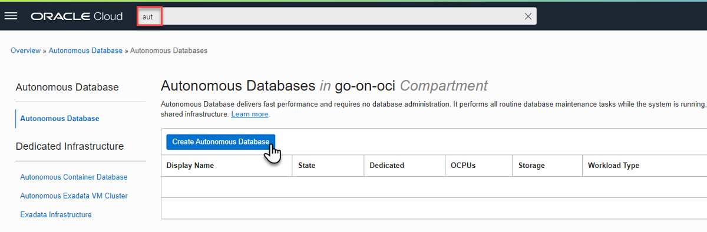
            </picture>

<p>In the creation form, provide a display name (maybe <em>go-on-oci-db</em>) and database name, select <em>Transaction Processing</em> as the workload type, toggle the <em>Always Free</em> toggle to active, provide a password for ADMIN (and remember it well), accept Network Access Type <em>Secure access from everywhere</em> and make sure checkbox <em>Require mutual TLS (mTLS) authentication</em> is checked.</p>

<picture class="aligncenter">
                <source srcset="assets/way-to-go-on-oci-article-4-create-autonomous-db.png 1x" />
                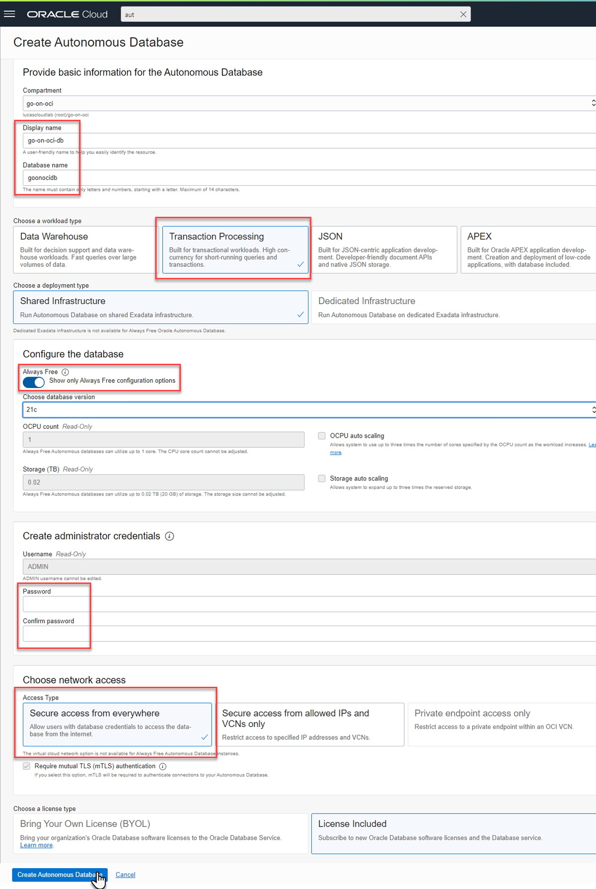
            </picture>

<p>After pressing the button <strong>Create Autonomous Database</strong> to create the database, the provisioning status is presented:</p>

<picture class="aligncenter">
                <source srcset="assets/way-to-go-on-oci-article-4-provisioningATP.png 1x" />
                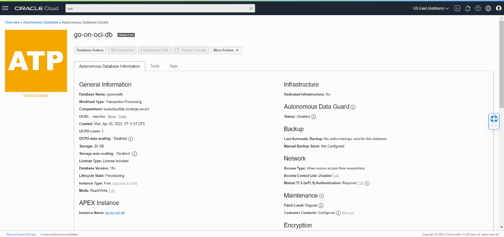
            </picture>

<p>It takes less than a minute for the database to be available.</p>

<h4 id="download-database-wallet-with-connect-details">Download Database Wallet with Connect Details</h4>

<p>We need the database wallet that contains the SSL certificates required for the mTLS interaction. Download the wallet for the ATP instance. First click the <strong>DB Connection</strong> button in the ATP page in the OCI Console, then click on <strong>Download wallet</strong>.</p>

<picture class="aligncenter">
                <source srcset="assets/way-to-go-on-oci-article-4-downloaddbwallet.png 1x" />
                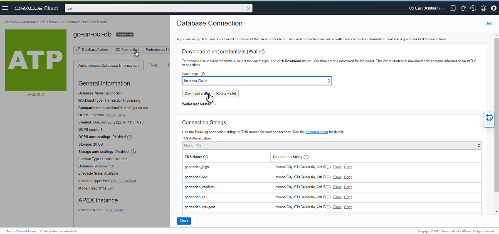
            </picture>

<p>Provide a password for the wallet; this may be needed for reading the wallet later on. Hang on to this password as well, though I have not needed this password for the steps described in this article.</p>

<p>Save the zip file, we’ll use it soon.</p>

<picture class="aligncenter">
                <source srcset="assets/way-to-go-on-oci-article-4-downloadwallet2.png 1x" />
                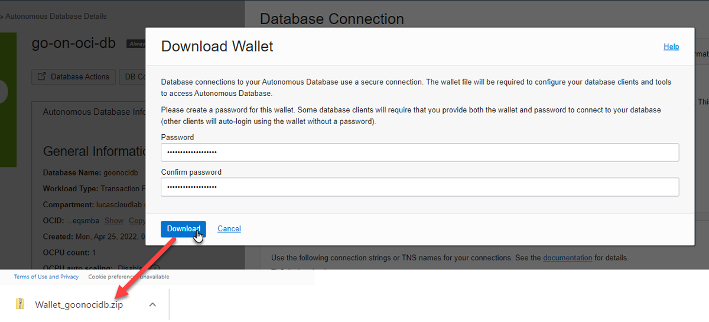
            </picture>

<h4 id="create-demo-user-account-in-autonomous-database">Create Demo user account in Autonomous Database</h4>

<p>You may want to create a <em>demo</em> user account in the autonomous database. You can do this with these steps:</p>

<ol>
  <li>On the ATP details page, click on button <strong>Database Actions</strong>. Connect as user <em>admin</em> and use the password that you used when configuring ATP.</li>
  <li>
    <p>In the <em>Database Actions Launchpad</em>, click on the tile <strong>SQL</strong>. The SQL Worksheet is opened.</p>

    <picture class="aligncenter">
             <source srcset="assets/way-to-go-on-oci-article-4-dbactions-sqldeveloper.png 1x" />
             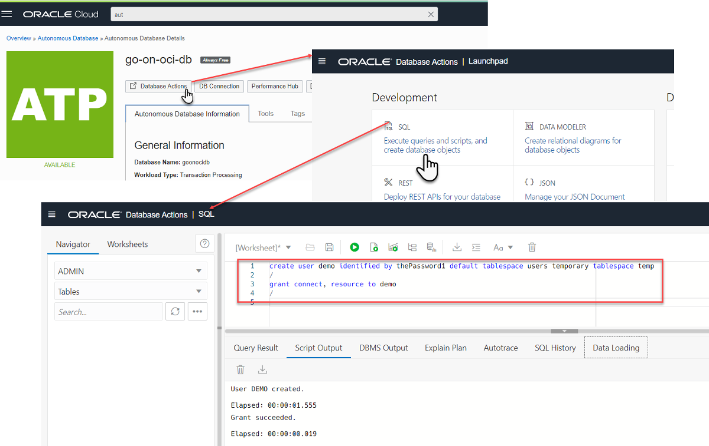
         </picture>
  </li>
  <li>
    <p>Paste the statements below into the worksheet and the icon for running the script (or use the F5 button on your keyboard). These statements create a user (schema) to work with in the following sections, just as we did in the local database:</p>

    <div class="language-sql highlighter-rouge"><div class="highlight"><pre class="highlight"><code> <span class="k">create</span> <span class="k">user</span> <span class="n">demo</span> <span class="n">identified</span> <span class="k">by</span> <span class="n">thePassword1</span> <span class="k">default</span> <span class="n">tablespace</span> <span class="n">users</span> <span class="k">temporary</span> <span class="n">tablespace</span> <span class="k">temp</span> 
 <span class="o">/</span>
 <span class="k">grant</span> <span class="k">connect</span><span class="p">,</span> <span class="n">resource</span> <span class="k">to</span> <span class="n">demo</span> 
 <span class="o">/</span>
 <span class="k">ALTER</span> <span class="k">USER</span> <span class="n">DEMO</span> <span class="n">QUOTA</span> <span class="n">UNLIMITED</span> <span class="k">ON</span> <span class="k">DATA</span>
 <span class="o">/</span>
</code></pre></div>    </div>
  </li>
</ol>

<h3 id="modify-go-application-with-atp-and-oracle-wallet-connection-details">Modify Go application with ATP and Oracle Wallet connection details</h3>

<p>When the Oracle Database that I want to interact with needs to be connected to with the use of an Oracle Wallet, then I need to pass the file system location of the Oracle Wallet to the driver. More precisely, I need to specify the path to the directory that contains the file <code class="language-plaintext highlighter-rouge">cwallet.sso</code> that is part of the wallet. The wallet is typically provided in a zip-archive. This archive should be extracted (or at least this file should) and the path to the directory that contains the file is what will be called the <code class="language-plaintext highlighter-rouge">walletLocation</code>. At this point, extract <code class="language-plaintext highlighter-rouge">cwallet.sso</code> from the wallet zip file and move this file to a location that is accessible from the Go application – it might even be in the same directory as the Go application itself. This is not the best practice for production grade applications, but for the purposes of this article it will suffice.</p>

<p>The connection details for the autonomous database that need to be provided consist of the same set of elements used earlier for the local database. The database service name can be found in the <code class="language-plaintext highlighter-rouge">tnsnames.ora</code> file in the wallet zip file or on the ATP DB Connection page in the OCI Console as <em>service_name</em>. The value for the <em>server</em> property is available as the <em>host</em> in these locations.</p>

<p>When the properties are gathered, the following map definition can be added in file <code class="language-plaintext highlighter-rouge">oracle-database-client-app.go</code>, right under <code class="language-plaintext highlighter-rouge">localDB</code>:</p>

<div class="language-go highlighter-rouge"><div class="highlight"><pre class="highlight"><code>
<span class="k">var</span> <span class="n">autonomousDB</span> <span class="o">=</span> <span class="k">map</span><span class="p">[</span><span class="kt">string</span><span class="p">]</span><span class="kt">string</span><span class="p">{</span>
	<span class="s">"service"</span><span class="o">:</span>        <span class="s">"k8j2fvxbaujdcfy_goonocidb_medium.adb.oraclecloud.com"</span><span class="p">,</span>
	<span class="s">"username"</span><span class="o">:</span>       <span class="s">"demo"</span><span class="p">,</span>
	<span class="s">"server"</span><span class="o">:</span>         <span class="s">"adb.us-ashburn-1.oraclecloud.com"</span><span class="p">,</span>
	<span class="s">"port"</span><span class="o">:</span>           <span class="s">"1522"</span><span class="p">,</span>
	<span class="s">"password"</span><span class="o">:</span>       <span class="s">"thePassword1"</span><span class="p">,</span>
	<span class="s">"walletLocation"</span><span class="o">:</span> <span class="s">"."</span><span class="p">,</span> <span class="c">// when the *.sso file has been moved into the application directory; otherwise provide the absolute directory path</span>
<span class="p">}</span>
</code></pre></div></div>

<h4 id="go-interaction-with-autonomous-database-using-driver-go-ora">Go interaction with Autonomous Database using Driver go-ora</h4>

<p>The <em>go-ora</em> driver configuration needs to be extended a little to include the wallet location in the connection string and configure the secure communication protocol.</p>

<div class="language-go highlighter-rouge"><div class="highlight"><pre class="highlight"><code><span class="k">func</span> <span class="n">GetSqlDBWithPureDriver</span><span class="p">(</span><span class="n">dbParams</span> <span class="k">map</span><span class="p">[</span><span class="kt">string</span><span class="p">]</span><span class="kt">string</span><span class="p">)</span> <span class="o">*</span><span class="n">sql</span><span class="o">.</span><span class="n">DB</span> <span class="p">{</span>
	<span class="n">connectionString</span> <span class="o">:=</span> <span class="s">"oracle://"</span> <span class="o">+</span> <span class="n">dbParams</span><span class="p">[</span><span class="s">"username"</span><span class="p">]</span> <span class="o">+</span> <span class="s">":"</span> <span class="o">+</span> <span class="n">dbParams</span><span class="p">[</span><span class="s">"password"</span><span class="p">]</span> <span class="o">+</span> <span class="s">"@"</span> <span class="o">+</span> <span class="n">dbParams</span><span class="p">[</span><span class="s">"server"</span><span class="p">]</span> <span class="o">+</span> <span class="s">":"</span> <span class="o">+</span> <span class="n">dbParams</span><span class="p">[</span><span class="s">"port"</span><span class="p">]</span> <span class="o">+</span> <span class="s">"/"</span> <span class="o">+</span> <span class="n">dbParams</span><span class="p">[</span><span class="s">"service"</span><span class="p">]</span>
	<span class="k">if</span> <span class="n">val</span><span class="p">,</span> <span class="n">ok</span> <span class="o">:=</span> <span class="n">dbParams</span><span class="p">[</span><span class="s">"walletLocation"</span><span class="p">];</span> <span class="n">ok</span> <span class="o">&amp;&amp;</span> <span class="n">val</span> <span class="o">!=</span> <span class="s">""</span> <span class="p">{</span>
		<span class="n">connectionString</span> <span class="o">+=</span> <span class="s">"?TRACE FILE=trace.log&amp;SSL=enable&amp;SSL Verify=false&amp;WALLET="</span> <span class="o">+</span> <span class="n">url</span><span class="o">.</span><span class="n">QueryEscape</span><span class="p">(</span><span class="n">dbParams</span><span class="p">[</span><span class="s">"walletLocation"</span><span class="p">])</span>
	<span class="p">}</span>
	<span class="n">db</span><span class="p">,</span> <span class="n">err</span> <span class="o">:=</span> <span class="n">sql</span><span class="o">.</span><span class="n">Open</span><span class="p">(</span><span class="s">"oracle"</span><span class="p">,</span> <span class="n">connectionString</span><span class="p">)</span>
    <span class="o">...</span>
</code></pre></div></div>

<p>To run the application against the Autonomous Database and do its <code class="language-plaintext highlighter-rouge">TEMP_TABLE</code> acrobatics in the cloud, we need to change the <code class="language-plaintext highlighter-rouge">main</code> function slightly:</p>

<div class="language-go highlighter-rouge"><div class="highlight"><pre class="highlight"><code><span class="k">func</span> <span class="n">main</span><span class="p">()</span> <span class="p">{</span>
	<span class="n">db</span> <span class="o">:=</span> <span class="n">GetSqlDBWithPureDriver</span><span class="p">(</span><span class="n">autonomousDB</span><span class="p">)</span>
	<span class="c">//db := GetSqlDBWithGoDrOrDriver(localDB)</span>
    <span class="o">...</span>
</code></pre></div></div>

<p>That is: replace the <code class="language-plaintext highlighter-rouge">localDB</code> reference in the call to <code class="language-plaintext highlighter-rouge">GetSqlDBWithPureDriver</code> with <code class="language-plaintext highlighter-rouge">autonomousDB</code>.</p>

<p>Now run the application again with <code class="language-plaintext highlighter-rouge">go run *.go</code>. The results will be exactly the same as before against the local database, but they will probably take a bit longer to be produced as now latency is introduced in each of the database interactions.</p>

<h4 id="go-interaction-with-autonomous-database-using-driver-godror">Go interaction with Autonomous Database using Driver godror</h4>

<p>The <em>godror</em> driver uses a slightly different setup for working with an Oracle Wallet compared to <em>go-ora</em>. The function <code class="language-plaintext highlighter-rouge">GetSqlDBWithGoDrOrDriver</code> in file <code class="language-plaintext highlighter-rouge">godror-based-oracle-database-client.go</code> is extended to handle this case:</p>

<div class="language-go highlighter-rouge"><div class="highlight"><pre class="highlight"><code><span class="k">func</span> <span class="n">GetSqlDBWithGoDrOrDriver</span><span class="p">(</span><span class="n">dbParams</span> <span class="k">map</span><span class="p">[</span><span class="kt">string</span><span class="p">]</span><span class="kt">string</span><span class="p">)</span> <span class="o">*</span><span class="n">sql</span><span class="o">.</span><span class="n">DB</span> <span class="p">{</span>
	<span class="k">var</span> <span class="n">db</span> <span class="o">*</span><span class="n">sql</span><span class="o">.</span><span class="n">DB</span>
	<span class="k">var</span> <span class="n">err</span> <span class="kt">error</span>
	<span class="k">if</span> <span class="n">val</span><span class="p">,</span> <span class="n">ok</span> <span class="o">:=</span> <span class="n">dbParams</span><span class="p">[</span><span class="s">"walletLocation"</span><span class="p">];</span> <span class="n">ok</span> <span class="o">&amp;&amp;</span> <span class="n">val</span> <span class="o">!=</span> <span class="s">""</span> <span class="p">{</span>
		<span class="n">db</span><span class="p">,</span> <span class="n">err</span> <span class="o">=</span> <span class="n">sql</span><span class="o">.</span><span class="n">Open</span><span class="p">(</span><span class="s">"godror"</span><span class="p">,</span> <span class="n">fmt</span><span class="o">.</span><span class="n">Sprintf</span><span class="p">(</span><span class="s">`user="%s" password="%s"
		connectString="tcps://%s:%s/%s?wallet_location=%s"
		   `</span><span class="p">,</span> <span class="n">dbParams</span><span class="p">[</span><span class="s">"username"</span><span class="p">],</span> <span class="n">dbParams</span><span class="p">[</span><span class="s">"password"</span><span class="p">],</span> <span class="n">dbParams</span><span class="p">[</span><span class="s">"server"</span><span class="p">],</span> <span class="n">dbParams</span><span class="p">[</span><span class="s">"port"</span><span class="p">],</span> <span class="n">dbParams</span><span class="p">[</span><span class="s">"service"</span><span class="p">],</span> <span class="n">dbParams</span><span class="p">[</span><span class="s">"walletLocation"</span><span class="p">]))</span>
	<span class="p">}</span>
	<span class="k">if</span> <span class="n">val</span><span class="p">,</span> <span class="n">ok</span> <span class="o">:=</span> <span class="n">dbParams</span><span class="p">[</span><span class="s">"walletLocation"</span><span class="p">];</span> <span class="o">!</span><span class="n">ok</span> <span class="o">||</span> <span class="n">val</span> <span class="o">==</span> <span class="s">""</span> <span class="p">{</span>
		<span class="n">connectionString</span> <span class="o">:=</span> <span class="s">"oracle://"</span> <span class="o">+</span> <span class="n">dbParams</span><span class="p">[</span><span class="s">"username"</span><span class="p">]</span> <span class="o">+</span> <span class="s">":"</span> <span class="o">+</span> <span class="n">dbParams</span><span class="p">[</span><span class="s">"password"</span><span class="p">]</span> <span class="o">+</span> <span class="s">"@"</span> <span class="o">+</span> <span class="n">dbParams</span><span class="p">[</span><span class="s">"server"</span><span class="p">]</span> <span class="o">+</span> <span class="s">":"</span> <span class="o">+</span> <span class="n">dbParams</span><span class="p">[</span><span class="s">"port"</span><span class="p">]</span> <span class="o">+</span> <span class="s">"/"</span> <span class="o">+</span> <span class="n">dbParams</span><span class="p">[</span><span class="s">"service"</span><span class="p">]</span>
		<span class="n">db</span><span class="p">,</span> <span class="n">err</span> <span class="o">=</span> <span class="n">sql</span><span class="o">.</span><span class="n">Open</span><span class="p">(</span><span class="s">"oracle"</span><span class="p">,</span> <span class="n">connectionString</span><span class="p">)</span>
	<span class="p">}</span>
	<span class="n">err</span> <span class="o">=</span> <span class="n">db</span><span class="o">.</span><span class="n">Ping</span><span class="p">()</span>
    <span class="o">...</span>
</code></pre></div></div>

<p>To run the application with the <em>godror</em> driver against the Autonomous Database and do its <code class="language-plaintext highlighter-rouge">TEMP_TABLE</code> acrobatics in the cloud, we need to change the <code class="language-plaintext highlighter-rouge">main</code> function slightly:</p>

<div class="language-go highlighter-rouge"><div class="highlight"><pre class="highlight"><code><span class="k">func</span> <span class="n">main</span><span class="p">()</span> <span class="p">{</span>
	<span class="c">//db := GetSqlDBWithPureDriver(autonomousDB)</span>
	<span class="n">db</span> <span class="o">:=</span> <span class="n">GetSqlDBWithGoDrOrDriver</span><span class="p">(</span><span class="n">autonomousDB</span><span class="p">)</span>
    <span class="o">...</span>
</code></pre></div></div>

<p>Now run the application again with <code class="language-plaintext highlighter-rouge">go run *.go</code>. The results will again be exactly the same as with the <em>go-ora</em> driver, but it seems (at least in my environment) that actions through <em>go-ora</em> are substantially faster than the same actions through <em>godror</em>.</p>

<h2 id="deploy-go-application-talking-to-autonomous-database-to-oci">Deploy Go Application talking to Autonomous Database to OCI</h2>

<p>The Code Repository contains an application called <em>data-service</em>, in directory <code class="language-plaintext highlighter-rouge">/applications/data-service</code>. This application is an extension of the <em>myserver</em> application that we worked with in articles one and two of this series. The application still handles HTTP requests as it did before, and this time also implements a simple data API. Using PUT, POST and DELETE requests, the application can be used to create, update and remove person records from a table called <code class="language-plaintext highlighter-rouge">PEOPLE</code> in an Oracle Database. Using GET requests, the current details for any person can be retrieved.</p>

<p>We will first take a brief look at the interesting elements in the application, and then run it locally. The next step is making this application run on OCI in a Compute instance. You will find that there is nothing very special about an application that has Autonomous Database interaction when it comes to deployment on OCI. Or, at least not until the next installment in this series where we will use OCI Key Vault to securely hold the Oracle Wallet details that – thanks to the instance principal based authorization – the application can retrieve at runtime. For now, however, the wallet is included in the source code repository and processed in the build and deployment pipelines. That is not a good practice and will be rectified in the next article.</p>

<p>Once the application is deployed, we verify if we can access it with direct access to the compute instance. To apply a good best practice regarding (not) publicly exposing services directly, we then extend the API Gateway with one more routes that lead to the <em>data-service</em>, and specifically its database-founded capabilities.</p>

<p>The final situation we achieve on OCI at the end of this section looks like this:</p>

<picture class="aligncenter">
                <source srcset="assets/way-to-go-on-oci-article-4-data-service-devops-oci-vm.png 1x" />
                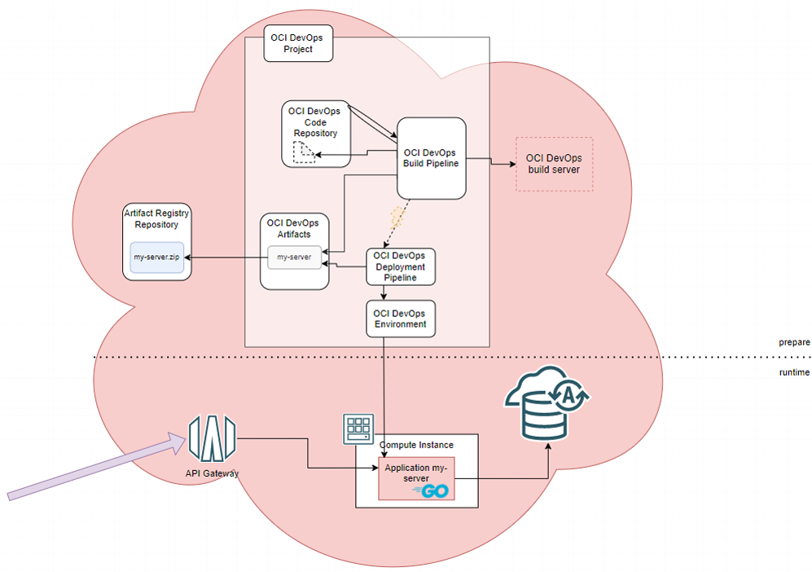
            </picture>

<h3 id="inspect-data-service-and-configure-for-your-atp-instance">Inspect data-service and configure for your ATP instance</h3>

<p>File <code class="language-plaintext highlighter-rouge">data-server.go</code> is new in the application. It contains all logic for interacting with the database and handling any HTTP request to the application that comes in on path <code class="language-plaintext highlighter-rouge">data</code>; the <code class="language-plaintext highlighter-rouge">DATA_PATH</code>. The registration in function <code class="language-plaintext highlighter-rouge">main</code> of the <code class="language-plaintext highlighter-rouge">DataHandler</code> function integrates the data handling capabilities.</p>

<div class="language-go highlighter-rouge"><div class="highlight"><pre class="highlight"><code>	<span class="n">http</span><span class="o">.</span><span class="n">HandleFunc</span><span class="p">(</span><span class="n">DATA_PATH</span><span class="p">,</span> <span class="n">DataHandler</span><span class="p">)</span>
</code></pre></div></div>

<p>Function <code class="language-plaintext highlighter-rouge">main</code> is also extended with these initialization steps:</p>

<div class="language-go highlighter-rouge"><div class="highlight"><pre class="highlight"><code><span class="k">func</span> <span class="n">main</span><span class="p">()</span> <span class="p">{</span>
	<span class="n">db</span> <span class="o">:=</span> <span class="n">GetSqlDBWithGoDrOrDriver</span><span class="p">(</span><span class="n">autonomousDB</span><span class="p">)</span>
	<span class="k">defer</span> <span class="k">func</span><span class="p">()</span> <span class="p">{</span>
		<span class="n">err</span> <span class="o">:=</span> <span class="n">db</span><span class="o">.</span><span class="n">Close</span><span class="p">()</span>
		<span class="k">if</span> <span class="n">err</span> <span class="o">!=</span> <span class="no">nil</span> <span class="p">{</span>
			<span class="n">fmt</span><span class="o">.</span><span class="n">Println</span><span class="p">(</span><span class="s">"Can't close connection: "</span><span class="p">,</span> <span class="n">err</span><span class="p">)</span>
		<span class="p">}</span>
	<span class="p">}()</span>
	<span class="n">InitializeDataServer</span><span class="p">(</span><span class="n">db</span><span class="p">)</span>
	<span class="o">...</span>
</code></pre></div></div>
<p>At the start of the <em>my-server</em> application, a database connection is created and data server is set up. The application uses the <em>godror</em> driver. Note that we make use of the fact that the Compute instance that is the deployment target was created (back in part one of the series) on the Oracle Linux Cloud Developer image and has the Oracle Instant Client preinstalled.</p>

<p>All the application needs added in order to run is:</p>

<ol>
  <li>Copy your <code class="language-plaintext highlighter-rouge">cwallet.sso</code> file to the root directory of the application</li>
  <li>Define your Autonomous Database connection details in <code class="language-plaintext highlighter-rouge">data-server.go</code></li>
</ol>

<p>You can then locally run the application, using</p>

<div class="language-console highlighter-rouge"><div class="highlight"><pre class="highlight"><code><span class="go">go run *.go
</span></code></pre></div></div>

<p>The application starts and reports for duty.</p>

<p>In a separate terminal window, you use <code class="language-plaintext highlighter-rouge">curl</code> statements to interact with the Person API. These HTTP requests will cause two records to be created – for Mickey Mouse and Bugs Bunny. Mickey’s record is updated once. Both records are retrieved once. Then both are deleted. The final GET request returns no data.</p>

<p>Feel free to add curl requests or not execute all. You can check, in the SQL Worksheet for example, if the Person API has created the database records that are expected.</p>

<picture class="aligncenter">
                <source srcset="assets/way-to-go-on-oci-article-4-person-api-persistant-data-in-sqlworksheet.png 1x" />
                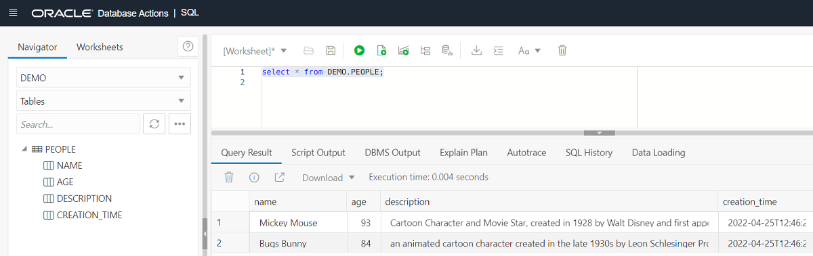
            </picture>

<div class="language-console highlighter-rouge"><div class="highlight"><pre class="highlight"><code><span class="go">curl -X "PUT" -H "Content-Type: application/json" -d '{"name":"Mickey Mouse", "age":93, "comment": "Cartoon Character"}' localhost:8080/data 

curl -X "PUT" -H "Content-Type: application/json" -d '{"name":"Bugs Bunny", "age":84, "comment": "an animated cartoon character created in the late 1930s by Leon Schlesinger Productions (later Warner Bros. Cartoons) and voiced originally by Mel Blanc."}' localhost:8080/data 

</span><span class="gp">curl -X "POST" -H "Content-Type: application/json" -d '{"name":"Mickey Mouse", "age":93, "comment": "Cartoon Character and Movie Star, created in 1928 by Walt Disney and first appearing in Steamboat Willie;</span><span class="w"> </span>he is the mascot of The Walt Disney Company. His partner is Minnie and he has a pet dog called Pluto <span class="s2">"}' localhost:8080/data 
</span><span class="go">
curl -X "GET"  localhost:8080/data?name=Mickey+Mouse 

curl -X "GET"  localhost:8080/data?name=Bugs+Bunny 

curl -X "DELETE" -H "Content-Type: application/json" -d '{"name":"Bugs Bunny"}' localhost:8080/data 

curl -X "DELETE" -H "Content-Type: application/json" -d '{"name":"Mickey Mouse"}' localhost:8080/data 

curl -X "GET"  localhost:8080/data?name=Mickey+Mouse 

</span></code></pre></div></div>

<h3 id="commit-push-and-build-leading-to-deploy-and-run">Commit, Push and Build leading to Deploy and Run</h3>

<p>This variant of the <em>myserver</em> application is ready to use and the code is already in the OCI DevOps Code Repository, as all code from the article source repository on GitHub was committed to the OCI Code Repository in the second article in this series. However, you have added file <code class="language-plaintext highlighter-rouge">cwallet.sso</code> (the Oracle Wallet for your Autonomous Database instance) and you have updated file <code class="language-plaintext highlighter-rouge">data-server.go</code> to provide database connection details. Before the build pipeline can be used on OCI to build and subsequently deploy the application, you first need to add the new file, <em>commit</em> both the changed and this added file, and <em>push</em> the changes to the OCI DevOps Code Repository.</p>

<p>After these <code class="language-plaintext highlighter-rouge">git add</code>, <code class="language-plaintext highlighter-rouge">commit</code> and <code class="language-plaintext highlighter-rouge">push</code> actions, the Code Repository <em>go-on-oci-repo</em> should contain your <code class="language-plaintext highlighter-rouge">cwallet.sso</code> and the <code class="language-plaintext highlighter-rouge">data-service.go</code> that you modified.</p>

<p>You can now reuse the build pipeline <em>build-myserver</em> that was setup in article two when we first discussed OCI DevOps Build Pipelines. However, the current pipeline expects the build specification file in the default location, and that will not do for the amended <em>myserver</em> application.</p>

<ol>
  <li>
    <p>Open the details page of the Build Pipeline <em>build-myserver</em> in the OCI Console. Open the details for the managed build stage. Click on <strong>Edit</strong>.</p>

    <picture class="aligncenter">
             <source srcset="assets/way-to-go-on-oci-article-4-update-build-pipeline-buildpsec.png 1x" />
             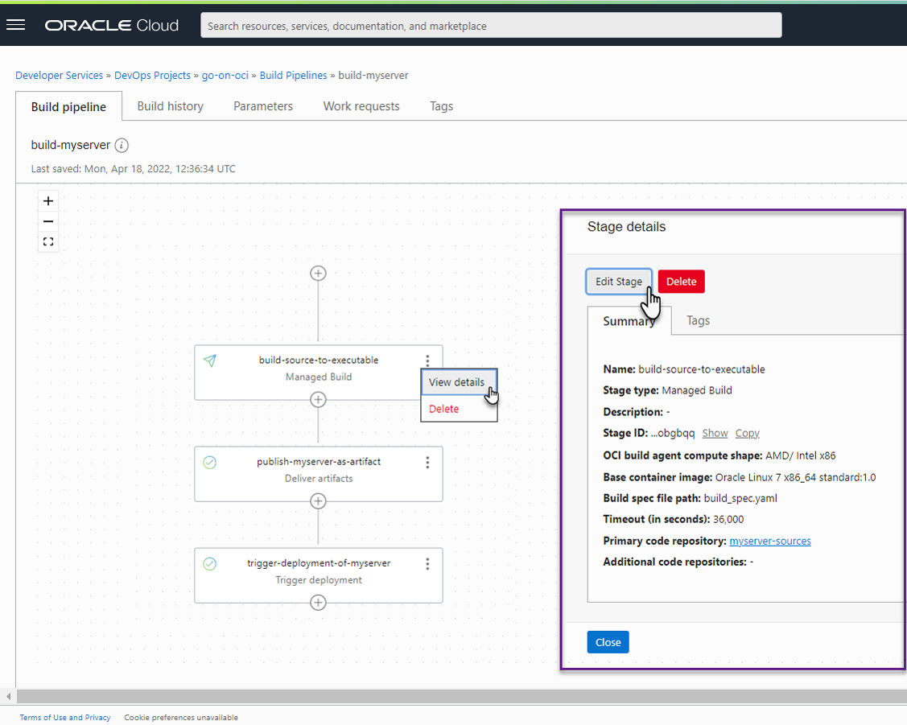
         </picture>
  </li>
  <li>
    <p>Change the value in the field <em>Build spec file path</em> to <code class="language-plaintext highlighter-rouge">/applications/data-service/build_spec.yaml</code>, the build specification that is modified to build the extended version of <em>myserver</em>. Click on <strong>Save</strong>.</p>

    <picture class="aligncenter">
             <source srcset="assets/way-to-go-on-oci-article-4-updatebuildspec-inbuild-pipeline.png 1x" />
             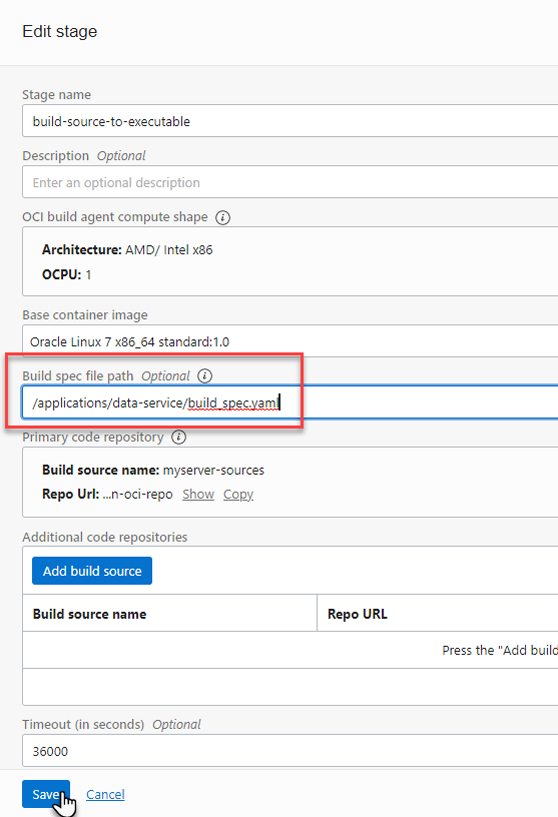
         </picture>
  </li>
  <li>
    <p>Start a build run. Set a new version for the parameter <code class="language-plaintext highlighter-rouge">MYSERVER_VERSION</code> if you want to.</p>
  </li>
</ol>

<p>The pipeline will produce a new artifact – a zip file with the executable built from the Go sources in directory <code class="language-plaintext highlighter-rouge">/applications/data-service</code> and containing the wallet file and <code class="language-plaintext highlighter-rouge">website</code> subdirectory. The pipeline will trigger the deployment pipeline that will bring the artifact to the Compute instance, copy the application to the <code class="language-plaintext highlighter-rouge">/tmp/yourserver</code> directory, and run the application. It starts listening for HTTP requests on the port specified by the deployment pipeline parameter <em>HTTP_SERVER_PORT</em> (or on 8080 if the parameter is not set).</p>

<p>You can access the Person API on the public IP address for the VM, if that is still exposed:</p>

<div class="language-console highlighter-rouge"><div class="highlight"><pre class="highlight"><code><span class="gp">curl -X "GET"  &lt;public IP for Compute Instance&gt;</span>:8095/data?name<span class="o">=</span>Mickey+Mouse
</code></pre></div></div>

<p>You can create a route on the API Gateway to provide proper public access to the Person API. Make sure that you add all methods that the API handles to the route definition.</p>

<p>&lt;picture class=”aligncenter assets/way-to-go-on-oci-article-4-dataapi-route-on-apigw.png 730 877 “Define route”&gt;
                <source srcset="/person 1x" />
                
            &lt;/picture&gt;</p>

<p>When the deployment is updated, the Person API is available at <code class="language-plaintext highlighter-rouge">https://&lt;public endpoind of API Gateway&gt;/my-api/person?name=Mickey+Mouse</code>.</p>

<picture class="aligncenter">
                <source srcset="assets/way-to-go-on-oci-article-4-apigw-computeinstance-atp.png 1x" />
                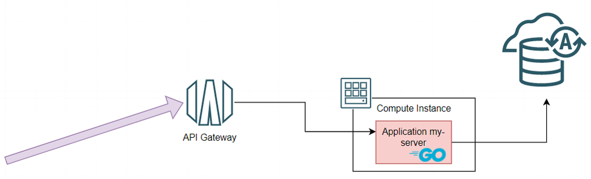
            </picture>

<p>Curl and other HTTP tools like Postman can be used to interact with the API, using all methods to create, update, retrieve and delete person records.</p>

<picture class="aligncenter">
                <source srcset="assets/way-to-go-on-oci-article-4-accessing-person-api-from-browser.png 1x" />
                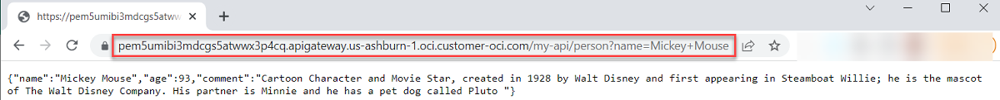
            </picture>

<h2 id="go-application-on-oci-interacting-with-autonomous-database-and-object-storage-service">Go Application on OCI interacting with Autonomous Database and Object Storage service</h2>

<p>The final step in this article combines the interaction with the OCI Object Storage service (introduced in the previous article) with operations on an Autonomous Database instance in a single Go application that is first ran locally and then deployed to and executed on a compute instance in OCI and exposed through API Gateway. The functionality provided: send an HTTP GET request with the names of an object and a bucket on Object Storage; the object should be a JSON file that contains data on people in the following format:</p>

<div class="language-json highlighter-rouge"><div class="highlight"><pre class="highlight"><code><span class="p">[</span><span class="w">
    </span><span class="p">{</span><span class="w">
        </span><span class="nl">"name"</span><span class="p">:</span><span class="w"> </span><span class="s2">"Jasper"</span><span class="p">,</span><span class="w">
        </span><span class="nl">"age"</span><span class="p">:</span><span class="w"> </span><span class="mi">19</span><span class="p">,</span><span class="w">
        </span><span class="nl">"comment"</span><span class="p">:</span><span class="w"> </span><span class="s2">"Haute Couture"</span><span class="w">
    </span><span class="p">},</span><span class="w">
    </span><span class="p">{</span><span class="w">
        </span><span class="nl">"name"</span><span class="p">:</span><span class="w"> </span><span class="s2">"James"</span><span class="p">,</span><span class="w">
        </span><span class="nl">"age"</span><span class="p">:</span><span class="w"> </span><span class="mi">3</span><span class="p">,</span><span class="w">
        </span><span class="nl">"comment"</span><span class="p">:</span><span class="w"> </span><span class="s2">"Golden retriever"</span><span class="w">
    </span><span class="p">}</span><span class="w">
</span><span class="p">]</span><span class="w">
</span></code></pre></div></div>

<p>The file will be read and records will be created in table <code class="language-plaintext highlighter-rouge">PEOPLE</code> in the Autonomous Database for each of the JSON entries.</p>

<p>All you need to add to the application in order to run:</p>

<ol>
  <li>Copy your <code class="language-plaintext highlighter-rouge">cwallet.sso</code> file to the root directory of the application</li>
  <li>Define your Autonomous Database connection details in <code class="language-plaintext highlighter-rouge">data-server.go</code></li>
  <li>Edit <code class="language-plaintext highlighter-rouge">my-server.go</code> – set the correct value for compartmentOCID</li>
  <li>Upload the file <code class="language-plaintext highlighter-rouge">website/sample-persons.json</code> to a bucket on the Object Storage service (feel free to edit the file or to upload a different file with similar contents)</li>
</ol>

<p>You can then locally run the application, using</p>

<div class="language-console highlighter-rouge"><div class="highlight"><pre class="highlight"><code><span class="go">go run *.go
</span></code></pre></div></div>

<p>The application starts and reports for duty.</p>

<p>In a separate terminal window, you use <code class="language-plaintext highlighter-rouge">curl</code> statements to interact with the new Persons file processor API. An HTTP request should pass in the name of the bucket and the object that contains the JSON data to process. The service will fetch the file, parse its contents and create or update records the <code class="language-plaintext highlighter-rouge">PEOPLE</code> table in the autonomous database.</p>

<div class="language-console highlighter-rouge"><div class="highlight"><pre class="highlight"><code><span class="go">curl "localhost:8080/people?objectName=sample-persons.json&amp;bucketName=the-bucket"
</span></code></pre></div></div>

<p>Using a call to the data API you can inspect the data records:</p>

<div class="language-console highlighter-rouge"><div class="highlight"><pre class="highlight"><code><span class="go">curl localhost:8080/data?name=Martha
</span></code></pre></div></div>

<p>And you can do the same in the SQL Developer Worksheet:</p>

<picture class="aligncenter">
                <source srcset="assets/way-to-go-on-oci-article-4-personnelfileprocessed-in-sqldeveloper.png 1x" />
                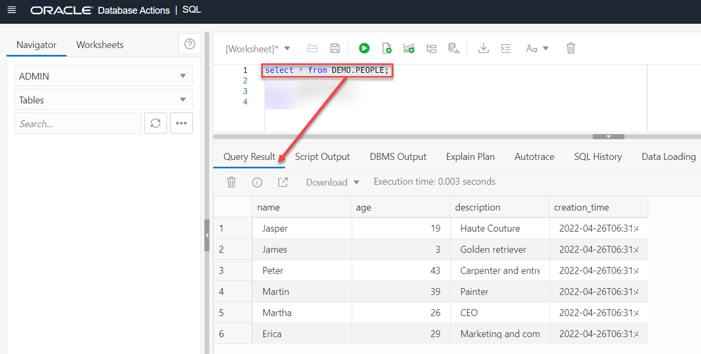
            </picture>

<p>You may be interested in the function <code class="language-plaintext highlighter-rouge">PeopleJSONProcessor</code>, which handles the record creation (or update) in table <code class="language-plaintext highlighter-rouge">PEOPLE</code>. It uses an Oracle-specific Bulk DML approach – syntax supported by the <em>godror</em> driver – where arrays of values for each of the bind parameters are passed in and all records are created in a single DML statement. Quite efficient.</p>

<div class="language-go highlighter-rouge"><div class="highlight"><pre class="highlight"><code><span class="k">func</span> <span class="n">PeopleJSONProcessor</span><span class="p">(</span><span class="n">peopleJson</span> <span class="p">[]</span><span class="kt">byte</span><span class="p">)</span> <span class="p">{</span>
	<span class="k">var</span> <span class="n">persons</span> <span class="p">[]</span><span class="n">Person</span>
	<span class="n">json</span><span class="o">.</span><span class="n">Unmarshal</span><span class="p">(</span><span class="n">peopleJson</span><span class="p">,</span> <span class="o">&amp;</span><span class="n">persons</span><span class="p">)</span>
	<span class="n">nameVals</span> <span class="o">:=</span> <span class="nb">make</span><span class="p">([]</span><span class="kt">string</span><span class="p">,</span> <span class="nb">len</span><span class="p">(</span><span class="n">persons</span><span class="p">))</span>
	<span class="n">ageVals</span> <span class="o">:=</span> <span class="nb">make</span><span class="p">([]</span><span class="kt">int</span><span class="p">,</span> <span class="nb">len</span><span class="p">(</span><span class="n">persons</span><span class="p">))</span>
	<span class="n">descriptionVals</span> <span class="o">:=</span> <span class="nb">make</span><span class="p">([]</span><span class="kt">string</span><span class="p">,</span> <span class="nb">len</span><span class="p">(</span><span class="n">persons</span><span class="p">))</span>
	<span class="k">for</span> <span class="n">i</span><span class="p">,</span> <span class="n">person</span> <span class="o">:=</span> <span class="k">range</span> <span class="n">persons</span> <span class="p">{</span>
		<span class="n">ageVals</span><span class="p">[</span><span class="n">i</span><span class="p">]</span> <span class="o">=</span> <span class="n">person</span><span class="o">.</span><span class="n">Age</span>
		<span class="n">nameVals</span><span class="p">[</span><span class="n">i</span><span class="p">]</span> <span class="o">=</span> <span class="n">person</span><span class="o">.</span><span class="n">Name</span>
		<span class="n">descriptionVals</span><span class="p">[</span><span class="n">i</span><span class="p">]</span> <span class="o">=</span> <span class="n">person</span><span class="o">.</span><span class="n">JuicyDetails</span>
	<span class="p">}</span>

	<span class="n">database</span><span class="o">.</span><span class="n">Exec</span><span class="p">(</span><span class="s">`MERGE INTO PEOPLE t using (select :name name, :age age, :description description from dual) person
		ON (t.name = person.name )
		WHEN MATCHED THEN UPDATE SET age = person.age, description = person.description
		WHEN NOT MATCHED THEN INSERT (t.name, t.age, t.description) values (person.name, person.age, person.description) `</span><span class="p">,</span>
		<span class="n">nameVals</span><span class="p">,</span> <span class="n">ageVals</span><span class="p">,</span> <span class="n">descriptionVals</span><span class="p">)</span>
<span class="p">}</span>
</code></pre></div></div>

<p>Now let us bring this application to OCI, to the Compute instance we have also used in the previous section. Some steps are needed as preparation:</p>

<ol>
  <li>Edit file <code class="language-plaintext highlighter-rouge">object-processor.go</code>: change the value of const <code class="language-plaintext highlighter-rouge">RUN_WITH_INSTANCE_PRINCIPAL_AUTHENTICATION</code> from false to true (this flag is false when running locally and true when running on a Compute Instance in OCI where Instance Principal authentication and authorization is used)</li>
  <li>Git actions: add <code class="language-plaintext highlighter-rouge">cwallet.sso</code> and commit this new file along with the changed files <code class="language-plaintext highlighter-rouge">my-server.go</code>, <code class="language-plaintext highlighter-rouge">object-processor.go</code> and <code class="language-plaintext highlighter-rouge">data-service.go</code>; push the commit to OCI Code Repository</li>
  <li>Make sure an IAM policy exists that allows the dynamic group <code class="language-plaintext highlighter-rouge">go-on-oci-instances</code> to read objects in the compartment; this makes it possible for the application running on the VM to call out to Object Storage Service to read the JSON file with <em>person</em> records . The policy statement could read: <code class="language-plaintext highlighter-rouge">Allow dynamic-group go-on-oci-instances to read objects in compartment go-on-oci</code></li>
</ol>

<p>After these <code class="language-plaintext highlighter-rouge">git add</code>, <code class="language-plaintext highlighter-rouge">commit</code> and <code class="language-plaintext highlighter-rouge">push</code> actions, the Code Repository <em>go-on-oci-repo</em> should contain your <code class="language-plaintext highlighter-rouge">cwallet.sso</code> and the <code class="language-plaintext highlighter-rouge">data-service.go</code> that you modified.</p>

<p>You can now reuse the build pipeline <em>build-myserver</em> that we used before. Just as we did earlier, we have to update the reference to the build specification file.</p>

<ol>
  <li>Open the details page of the Build Pipeline <em>build-myserver</em> in the OCI Console</li>
  <li>Open the details for the managed build stage</li>
  <li>Click on <strong>Edit</strong></li>
  <li>Change the value in the field <em>Build spec file path</em> to <code class="language-plaintext highlighter-rouge">/applications/people-file-processor/build_spec.yaml</code>, the build specification that is modified to build the extended version of <em>myserver</em></li>
  <li>Click on <strong>Save</strong></li>
</ol>

<picture class="aligncenter">
                <source srcset="assets/way-to-go-on-oci-article-4-updatebuildpipeline-buildspec-people-processor.png 1x" />
                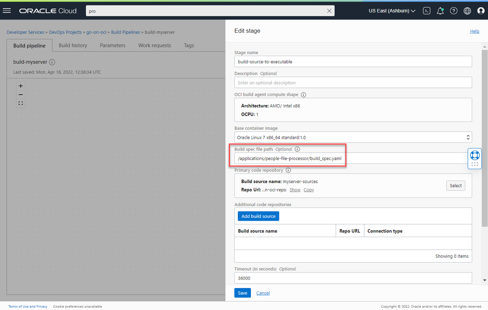
            </picture>

<p>Start a build run. Set a new version for the parameter <em>MYSERVER_VERSION</em> if you want to.</p>

<p>The pipeline will produce a new artifact – a zip file with the executable built from the Go sources in directory <code class="language-plaintext highlighter-rouge">/applications/people-file-processor</code> and containing the wallet file and <code class="language-plaintext highlighter-rouge">website</code> subdirectory. The pipeline will trigger the deployment pipeline that will bring the artifact to the Compute instance, copy the application to the <code class="language-plaintext highlighter-rouge">/tmp/yourserver</code> directory, and run the application. It starts listening for HTTP requests on the port specified by the deployment pipeline parameter <em>HTTP_SERVER_PORT</em> (or on 8080 if the parameter is not set).</p>

<p>You can access the API on the public IP address for the VM – if that is still exposed. It’s better to add a route on the API Gateway to expose access to the personnel file processor:</p>

<ol>
  <li>Navigate to the details for <code class="language-plaintext highlighter-rouge">the-api-gateway</code></li>
  <li>Open the tab <em>Deployments</em></li>
  <li>Click on <strong>Edit</strong></li>
  <li>Open the second step for <strong>Routes</strong> and add a new route.</li>
</ol>

<p>Define the <em>Path</em> as <code class="language-plaintext highlighter-rouge">/personnel-file-handler</code>. The <em>GET</em> method should be supported. The type of the route is <em>HTTP</em>. The <em>URL</em> is: <code class="language-plaintext highlighter-rouge">http://&lt;Public IP for Compute Instance&gt;:8095/people</code>. Check the value of the <em>HTTP_SERVER_PORT</em> on the deployment pipeline <em>deploy-myserver-on-go-app-vm</em>. If it is not set to <em>8095</em>, then modify the URL value to use the proper port number for the application.</p>

<picture class="aligncenter">
                <source srcset="assets/way-to-go-on-oci-article-4-create-route-for-personnel-file-processor-on-apigw.png 1x" />
                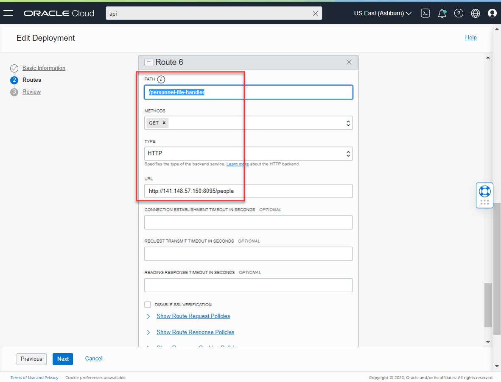
            </picture>

<p>Press <strong>Next</strong>, then <strong>Save changes</strong>. It will take a moment for the API Gateway’s Deployment to be refreshed. Once it has, the service that reads a file from an Object Storage bucket, processes the JSON content and creates records in table <code class="language-plaintext highlighter-rouge">PEOPLE</code> in the Autonomous Database instance for the entries in this file can be triggered with a simple HTTP GET request to <code class="language-plaintext highlighter-rouge">https://&lt;public endpoind of API Gateway&gt;/my-api/personnel-file-handler?objectName=sample-persons.json&amp;bucketName=the-bucket</code>.</p>

<p>The effect of making the call can be inspected through the <em>person</em> API that reads records from that same table in that same database: <code class="language-plaintext highlighter-rouge">https://&lt;public endpoind of API Gateway&gt;/my-api/person?name=Jasper</code>.</p>

<p>The end-to-end picture of what is now deployed on OCI is shown in the next figure.</p>

<figure class="aligncenter">
              <picture>
                  <source srcset="assets/way-to-go-on-oci-article-4-endtoend-apigw-vm-object-atp.png 1x" />
                  
              </picture>
              <figcaption>End to end flow: the HTTP request via API Gateway triggers the my-server application that retrieves a file from Object Storage and creates records in the Autonomous Database for all person entries in the file</figcaption>
            </figure>

<p>What is <em>not</em> shown in the picture and is important to note:</p>

<ul>
  <li>the Oracle Wallet file deployed with the application (in the artifact built from the source in Code Repository)</li>
  <li>hard coded reference to the compartment in the application</li>
  <li>the policy that grants permission to the compute instance to read objects</li>
</ul>

<p>In the next article we look at OCI Key Vault, a service that offers a much better way to store the Oracle Wallet and make it available to the application at deployment time (or even runtime).</p>

<h2 id="conclusion">Conclusion</h2>

<p>This article demonstrated how one can interact with an Oracle Database from Go applications, either a traditional one or the autonomous kind. We have seen how a connection from a Go application to a local Oracle Database – as well as to an Autonomous Database is made – using a driver and possibly supporting libraries, and how DDL and DML SQL operations can be performed with these databases from the comfort of the Go application. Using an Oracle Wallet for proper management of (autonomous) database credentials was discussed. An application running on an OCI Compute Instance, interacting through the Go SDK for OCI with the Object Storage Service, and manipulating the Autonomous Database – automatically deployed through OCI DevOps – provided the finale of the article.</p>

<p>The fifth and last article in this series series adds two more OCI services with which Go applications can interact: OCI Streaming – a high volume streaming message broker that allows for decoupled interactions between different microservices and other components – and the OCI Key Vault for managing secrets such as Oracle Wallet with database credentials. This article also introduces a third type of application platform next to VM and serverless function, in the shape of the managed OCI Kubernetes Enginer (OKE), and it shows how DevOps Deployment Pipelines can deploy our Go applications to OKE in an automated way.</p>

<h2 id="resources">Resources</h2>

<p><a href="https://github.com/lucasjellema/go-on-oci-article-sources">Source code repository for the sources discussed in this article series</a></p>

<p><a href="https://go.dev/doc/tutorial/database-access">Go Dev – Tutorial: Accessing a relational database</a>
<a href="http://go-database-sql.org/overview.html">General introduction to working with the database/sql package</a>
<a href="https://medium.com/oracledevs/connecting-go-application-to-oracle-database-on-prem-and-autonomous-with-and-without-oracle-c5535bbec135">Connecting a Go application to Oracle Database</a>
<a href="https://blog.logrocket.com/using-sql-database-golang/">Using an SQL database in Golang</a>
<a href="https://oracle-base.com/articles/vm/oracle-cloud-autonomous-transaction-processing-atp-create-service">Oracle Cloud : Autonomous Transaction Processing (ATP) – Create Service</a></p>

<p><a href="https://go.dev/doc/database/">Go Dev Docs – Accessing relational databases</a></p>

<p><a href="https://github.com/golang/go/wiki/SQLDrivers">List of drivers for Go database/sql – to use a specific database product from Go</a></p>

<p><a href="https://github.com/sijms/go-ora">Go Oracle Database Driver go-ora – a pure client that does not need additional libraries</a></p>

<p><a href="https://github.com/godror/godror">Go Oracle Database Driver godror – uses Oracle Client libraries </a>
<a href="https://godror.github.io/godror/doc/contents.html">Go DRiver for ORacle User Guide</a></p>

<p><a href="https://www.oracle.com/database/technologies/instant-client/downloads.html">Download Oracle Client libraries (free Basic or Basic Light package) – needed with godror at run time</a></p>

<p><a href="https://godror.github.io/godror/doc/installation.html">Installation instructions for GoDrOr package</a> 
<a href="https://oracle.github.io/odpi/doc/installation.html">Some instructions on installing Oracle Instant Client</a>
<a href="https://oracle.github.io/odpi/doc/installation.html">Download page for Oracle Instant Client</a>.</p>

<p><a href="https://docs.oracle.com/en/database/oracle/oracle-database/21/lacli/installing-instant-client.html">Oracle Database Documentation for Release 21c – Database Client Installation Guide for Linux – Installing Oracle Instant Client</a></p>

<p><a href="http://www.myexperimentswithjava.com/2021/07/how-to-connect-go-program-to-oracle.html">How to Connect a Go program to Oracle Autonomous Database on the blog My Experiments with Java by Pallab Rath</a></p>

<p><a href="https://static.rainfocus.com/oracle/oow19/sess/1567058525476001cK8G/PF/DEV6708-Using-the-Go-Language-for-Efficient-Oracle-Database-Applications_1568841171132001jI7d.pdf">Using the Go Language for Efficient Oracle Database Applications (slidedeck) – Anthony Tuininga, Oracle OpenWorld 2019</a></p>


          <div class="sidebar sticky">
    <!-- <p><strong>Tags:</strong> <span class="tags">

            
            <a class="animated-link tag" href="/topics/open-source">open-source</a>
            <a class="animated-link tag" href="/topics/devops">devops</a>
            <a class="animated-link tag" href="/topics/get-started">get-started</a>
            <a class="animated-link tag" href="/topics/automation">automation</a>
            <a class="animated-link tag" href="/topics/iac">iac</a>
            </span>
    </p> -->
  


<div itemscope itemtype="https://schema.org/Person">

  

  <div class="author__content">
    
      <a href="https:/technology.amis.nl"><h3 class="author__name" itemprop="name">Lucas Jellema</h3></a>
    
    
      <div class="author__bio" itemprop="description">
        <p>developer, solution architect, blogger, Oracle Groundbreaker Ambassador, Oracle ACE Director</p>

      </div>
    
  </div>

  <div class="author__urls-wrapper">
    <ul class="author__urls social-icons">
      
        <li itemprop="homeLocation" itemscope itemtype="https://schema.org/Place">
          <i class="fas fa-fw fa-map-marker-alt" aria-hidden="true"></i> <span itemprop="name">The Netherlands</span>
        </li>
      

      

      

      
        <li>
          <a href="mailto:lucasjellema@gmail.com">
            <meta itemprop="email" content="lucasjellema@gmail.com" />
            <i class="fas fa-fw fa-envelope-square" aria-hidden="true"></i><span class="label">Email</span>
          </a>
        </li>
      

      

      
        <li>
          <a href="https://twitter.com/lucasjellema" itemprop="sameAs" rel="nofollow noopener noreferrer">
            <i class="fab fa-fw fa-twitter-square" aria-hidden="true"></i><span class="label">Twitter</span>
          </a>
        </li>
      

      

      
        <li>
          <a href="https://www.linkedin.com/in/lucasjellema" itemprop="sameAs" rel="nofollow noopener noreferrer">
            <i class="fab fa-fw fa-linkedin" aria-hidden="true"></i><span class="label">LinkedIn</span>
          </a>
        </li>
      

      

      

      

      

      
        <li>
          <a href="https://github.com/lucasjellema" itemprop="sameAs" rel="nofollow noopener noreferrer">
            <i class="fab fa-fw fa-github" aria-hidden="true"></i><span class="label">GitHub</span>
          </a>
        </li>
      

      

      

      

      

      

      

      

      

      

      

      

      

      

      
    </ul>
  </div>
</div>

  
  
  

  </div>


      </section>

      <footer class="page__meta">
        
        


        

  <p class="page__date"><strong><i class="fas fa-fw fa-calendar-alt" aria-hidden="true"></i> Updated:</strong> <time datetime="2022-05-26T11:00:00+00:00">May 26, 2022</time></p>


      </footer>
    </div>

  </article>
</div>

</div>

